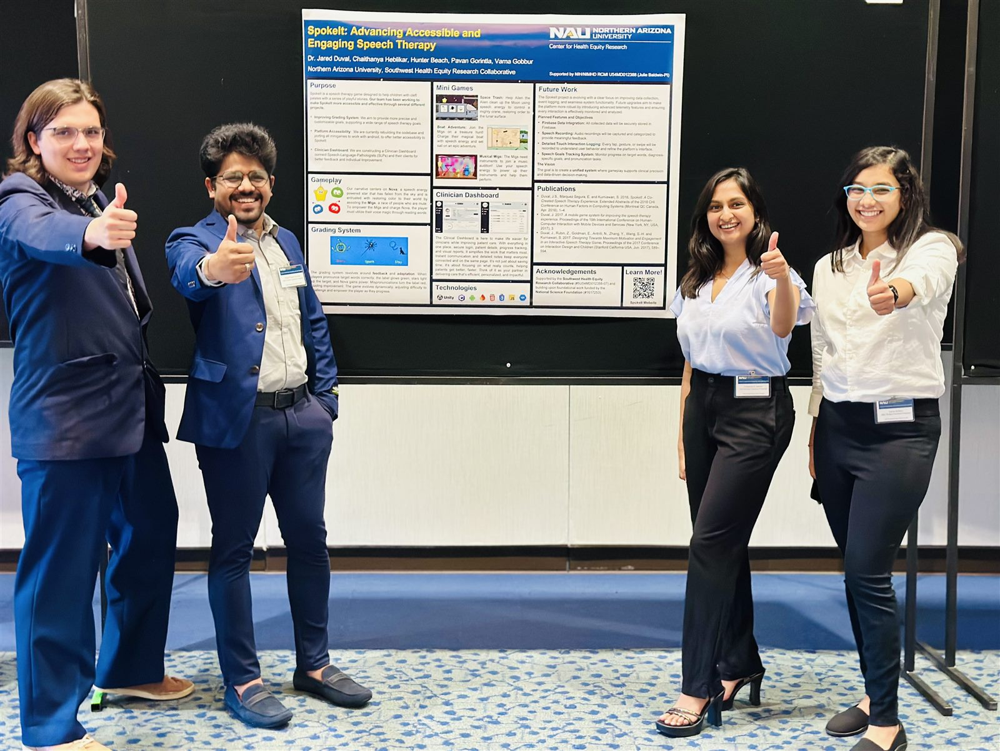
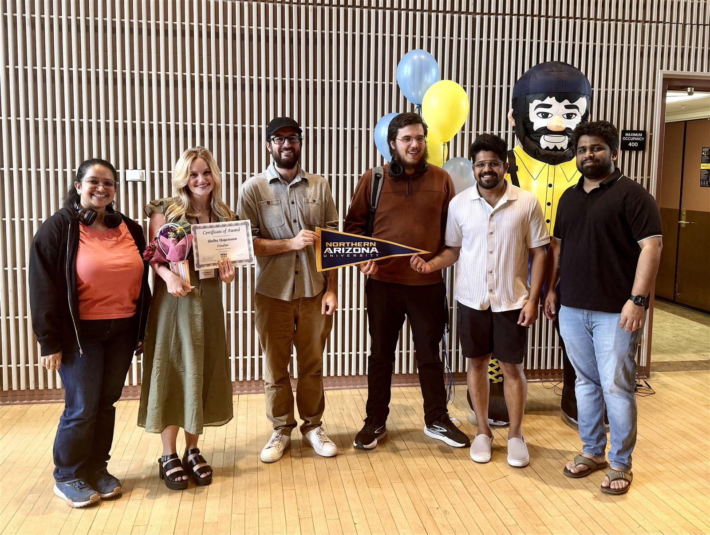
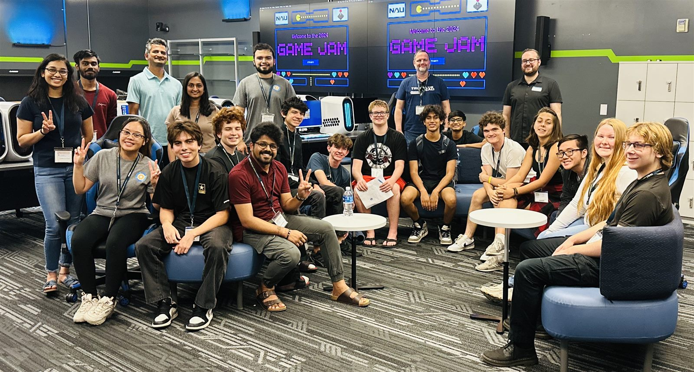
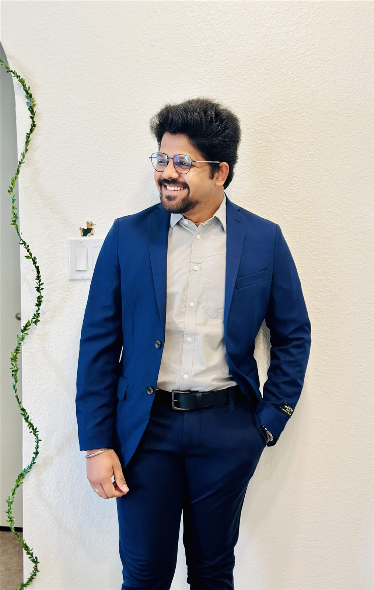
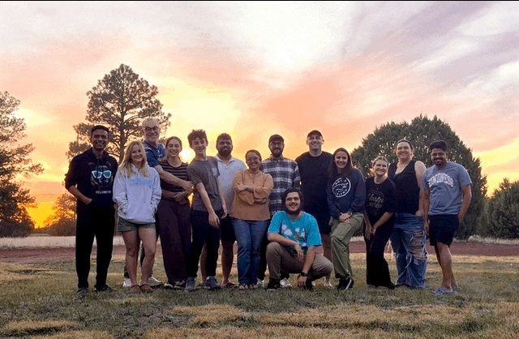
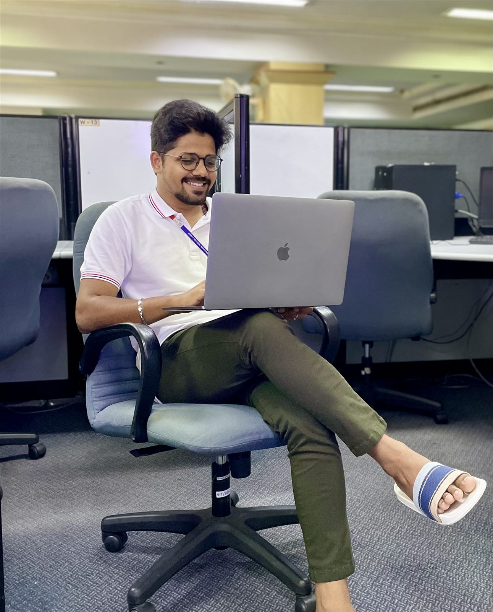
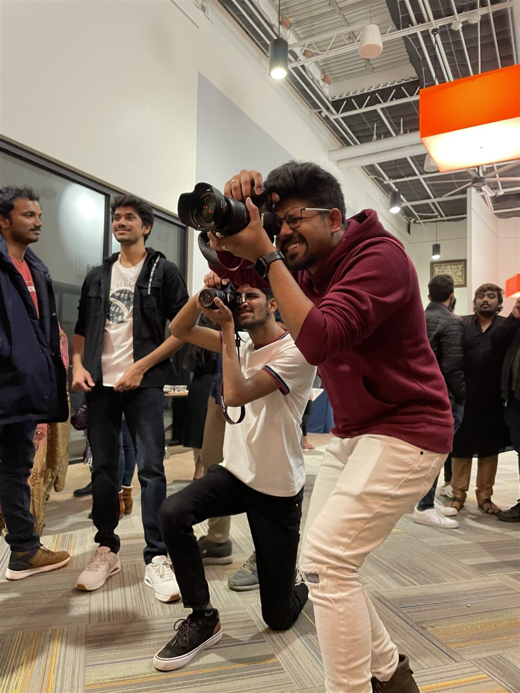
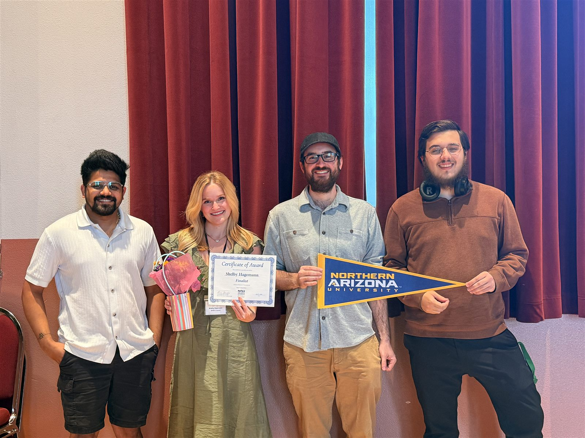
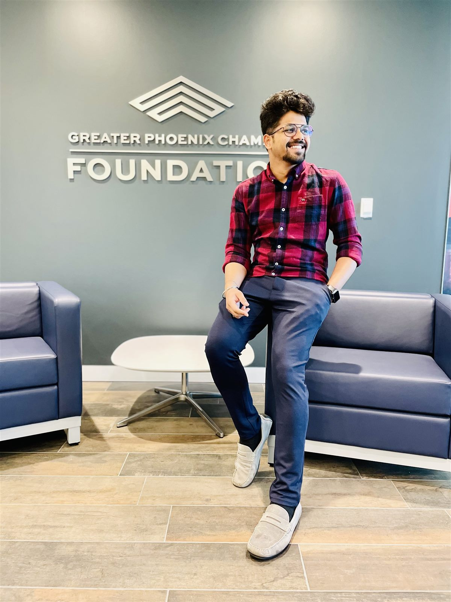

About
Welcome. I am a second-year PhD student in Informatics at Northern Arizona University, working in the Playful Health Technology Lab under Dr. Jared Duval.
My research sits at the intersection of human-computer interaction, accessibility, data visualization, and playful health technology. I build interactive, accessible tools that help researchers and communities make sense of health and accessibility research at scale.
Two parallel threads drive my dissertation. The first is an interactive, accessible visualization platform that organizes three decades of accessibility and serious-games research along experiential design dimensions. The second is CardioCare Quest, a community co-designed playful telehealth intervention for hypertension management in the Navajo community.
I am based in Flagstaff, Arizona, where I also work as a graduate research assistant and help mentor a student capstone team. For more, see my CV below.
Projects
What I build
CardioCare Quest
A culturally grounded, accessible serious game for hypertension management, co-designed with and for the Navajo community.
View on GitHub →Accessible Research Dashboard
An interactive, accessible platform that maps 215 accessibility and serious-games papers (1994–2023) across nine experiential design dimensions, with keyboard, screen-reader, and sonification support.
View project →Games-for-Health Explorer
An exploratory visualization of games-for-health research, built for rapid, accessible synthesis of the field.
View project →SPEKTR Career Matrix
A visual career-placement matrix that helps students and graduates explore and compare career paths.
View project →Research
Selected Work
Working Papers
Pavan Prasad Gorintla, Jared Duval, and colleagues. 2026. “Community Playtesting CardioCare Quest Among Adults with Disabilities at the Hozhoni Foundation.” In preparation
TACCESS Special Issue on Play and Accessibility, July 2026.
Designing playful health technology for Indigenous adults with disabilities requires more than an accessible interface. This paper deploys CardioCare Quest, a community co-designed hypertension intervention, with adults at the Hozhoni Foundation in Flagstaff, Arizona. We characterize the cardiovascular risk profile of participants through pre-play measures of blood pressure, BMI, and resting heart rate; observe how players engage physically with the Dog Walking game through step counts and heart-rate response; and report shifts in hypertension knowledge and self-monitoring attitudes after open community play. The findings point toward design implications for playful health technologies that take seriously the lived experience of intellectual and developmental disability in rural Indigenous communities.
Pavan Prasad Gorintla and Jared Duval. 2026. “An Interactive, Accessible Visualization Platform for Systematic Review of Playful Health Technology Research.” In preparation
TACCESS Special Issue on Play and Accessibility, July 2026.
Systematic reviews in accessibility and serious-games research are typically static, text-heavy, and difficult to navigate for the disabled researchers most affected by their findings. We present an interactive web platform that organizes 215 peer-reviewed papers (1994–2023) along nine experiential design dimensions drawn from the Playful Health Technology framework. The platform pairs coordinated spectrum heatmaps, dot matrices, and filter views with full keyboard operability, screen-reader compatibility, audio-tactile sonification, and WCAG 2.1 AA contrast. In a pilot study with eleven HCI researchers, nine preferred the heatmap view over conventional bar charts, and participants completed exploratory synthesis tasks in roughly half the time of equivalent manual review. We argue that accessible visualization is not a downstream concern but a prerequisite for equitable knowledge synthesis in our field.
Pavan Prasad Gorintla, Shelby Hagemann, Saroj Kaashyap Pokkula, Hunter Beach, Smirthya Somaskantha Iyer, Morgan Vigil-Hayes, Ashish Amresh, and Jared Duval. 2026. “Applying Accountability and Transparency to an LLM-Powered Synthesis of Game-Based Research in ASSETS.” In preparation
TACCESS Special Issue on Play and Accessibility, July 2026.
Large language models are increasingly used to support literature synthesis, but their fitness for subjective, experiential annotation in accessibility research remains poorly understood. We deploy a four-model ensemble (GPT-5, Gemini Pro, Llama 3, Mistral Large) against 215 peer-reviewed papers on serious games for accessibility, comparing their answers to a human consensus baseline of 1,720 annotations from HCI researchers. Our retrieval-augmented prompting pipeline requires each model to self-report confidence, cite the source chunks supporting its answer, and iteratively expand its context through four decision modes. We find that models can match human annotators on some questions but fall short on more experiential ones, and that decision mode and confidence correlate meaningfully with answer correctness. We offer the pipeline as a tool researchers can use to apply LLMs in their own work while preserving fairness, accountability, and transparency.
Work in Progress
Pavan Prasad Gorintla. “Mapping Three Decades of Experiential Design in Playful Health Technology: A Systematic Review with Interactive Visualization.” Drafting
Comprehensive examination paper, Northern Arizona University.
Pavan Prasad Gorintla and Jared Duval. “Interactive Visualization of Thirty Years of Accessibility and Serious-Games Research.” Presented
NAU Graduate Student Government Research Symposium, 2025.
Gallery
Moments









Curriculum Vitae
Education & CV
- PhDInformatics, Computing & Cyber SystemsNorthern Arizona University · Playful Health Technology Lab · in progress
- MSComputer ScienceNorthern Arizona University
- DiplomaInformation SystemsAlliance University, Bangalore, India